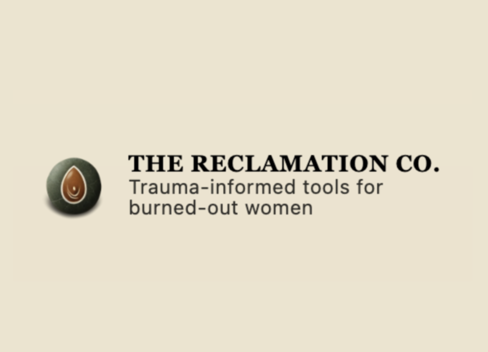

Portfolio
Websites built for calm, clarity, and conversion
Selected builds and product work — clean structure, thoughtful design, and clear next steps.
Each case study shows what changed, why it mattered, and how it supports inquiries.
Mobile-first
Built to feel great on phones — not “shrunk down.”
SEO foundations
Clean structure, metadata, and crawl-friendly setup.
Tracked CTAs
Events + click tracking so you know what’s working.
Maintainable
Simple updates without tech spirals.

A strategy-led nonprofit website designed for clarity, safety, and
trust
Mission-driven build for a trauma-informed nonprofit serving
multiple audiences. Focused on calm pacing, intentional structure,
and clear pathways without urgency or overwhelm.
Tech: HTML, CSS, JavaScript
View case study →
Live site →
Strategy-led inquiry →

From outdated WordPress to a fast, trackable site that drives
quotes
Full rebuild for a trades business: clean structure, mobile-first
layout, SEO foundations, GA4 events, and domain go-live.
Tech: HTML, CSS, JavaScript
View case study →
Live site →
Start a project →

A services site built to attract aligned clients — and filter out
the wrong ones
Internal studio build: outcome-led services, clean UX, SEO setup,
and conversion tracking so the funnel can be improved with real
data.
Tech: HTML, CSS, JavaScript
View case study →
Start a project →
Websites
Additional builds and in-progress work beyond full case studies.
Calm conversion layout for a story-driven brand
Grounded layout and clear structure built for readable flow and
confident next steps.
Tech: HTML, CSS
Live site →
More client work is underway
I work with a small number of clients at a time to keep builds
focused and high-quality. New case studies are added as projects
go live.
Digital Products

A premium ritual journal designed for depth + repeat use
Digital journal built for clarity, engagement, and a product-led
sales flow.
Deliverable: Product + sales flow
Build my product page →